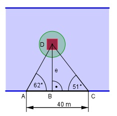

Aufgabe 130 Auf einer Flussinsel befindet sich ein Gebäude. Wie groß ist seine Entfernung e vom Ufer, wenn ein Vermesser am Ufer eine 40 m lange Standlinie abgesteckt und von deren Eckpunkten das Gebäude unter 62° und 51° angepeilt hat?

Im Dreieck ABD: e tan 62° = ----- |*AB AB e = AB * tan 62° Im Dreieck BCD: e tan 51° = ---------- |*(40 – AB) 40 - AB e = (40 – AB) * tan 51° Gleichgesetzt: AB * tan 62° = (40 – AB) * tan 51° AB*tan 62° = 40*tan 51° - AB*tan 51° |+AB*tan 51° AB * tan 62° + AB * tan 51° = 40 * tan 51° AB*(tan62° + tan51°) = 40*tan51° |(tan62°+tan51°) 40 * tan 51° AB = ------------------- = tan 62° + tan 51° 40 * 1,2349 = --------------------- = 15,85 m 1,8807 + 1,2349 e = AB * tan 62° e = AB * tan 62° = 15,85 m * 1,8807 = 29,8 m